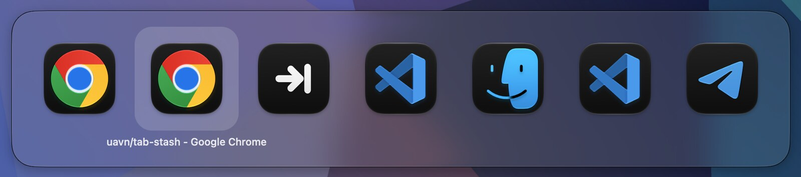
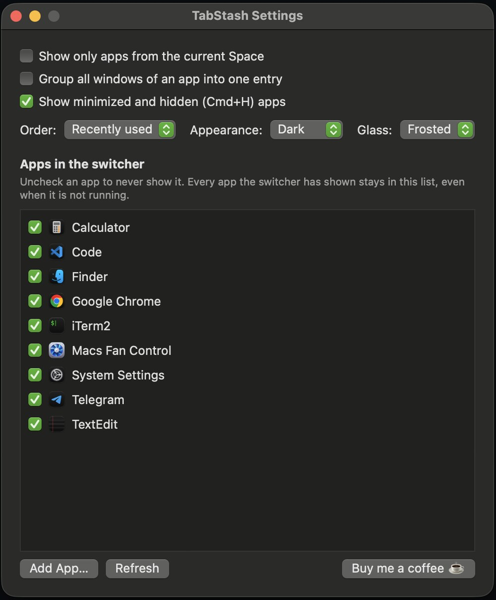

Cmd+Tab, set up your way.
Free and open source. macOS 13 or newer, Apple Silicon.

macOS Cmd+Tab shows every app on every Space. Pick one and the screen jumps to another desktop, scattering your context.
TabStash lists only what is in front of you, and activating an app raises its window right here instead of throwing you somewhere else.
Only apps with a window on the current Space. One checkbox brings back the full list.
No more being thrown to another desktop. Pick a window that really is elsewhere and macOS follows you there.
Turn grouping off and each window is its own entry, captioned with its title.
It remembers windows, not only apps, so one Cmd+Tab flips between the two you actually use.
Optional and dimmed. Picking one brings the window back, Cmd+H included.
Sort by recent use, name or window order. Liquid Glass that follows the system, or pinned light, dark, frosted or clear.
Every app the switcher has shown stays in Settings, even after you quit it, so hiding one for good is a single checkbox.
A small tag marks a minimized window, a hidden app, or a window on another desktop (→ 2), so you know where a pick will take you.
Hover to select, click to switch. Cmd+W closes the highlighted window, Cmd+M minimizes it.
Menu bar only. No Dock icon, no telemetry, no network access, no accounts, no ads.
| Cmd + Tab | Open switcher, next |
| Cmd + Shift + Tab, arrows | Previous, navigate |
| Cmd + Q / Cmd + H | Quit or hide the selection |
| Cmd + W / Cmd + M | Close or minimize the selected window |
| Mouse | Hover to select, click to switch |
| Esc | Close without switching |

git clone https://github.com/uavn/tab-stash.git cd tab-stash ./build.sh open build/TabStash.app
The build is not signed by Apple, so macOS quarantines it after download and may refuse to open it, or claim it is damaged. Drag it to Applications and strip the quarantine flag:
xattr -dr com.apple.quarantine /Applications/TabStash.app
Then open it normally. If macOS says the developer cannot be verified instead, open System Settings → Privacy & Security and press Open Anyway. Building from source avoids quarantine entirely.
TabStash needs Accessibility permission to see Cmd+Tab: System Settings → Privacy & Security → Accessibility. It does not need Screen Recording.